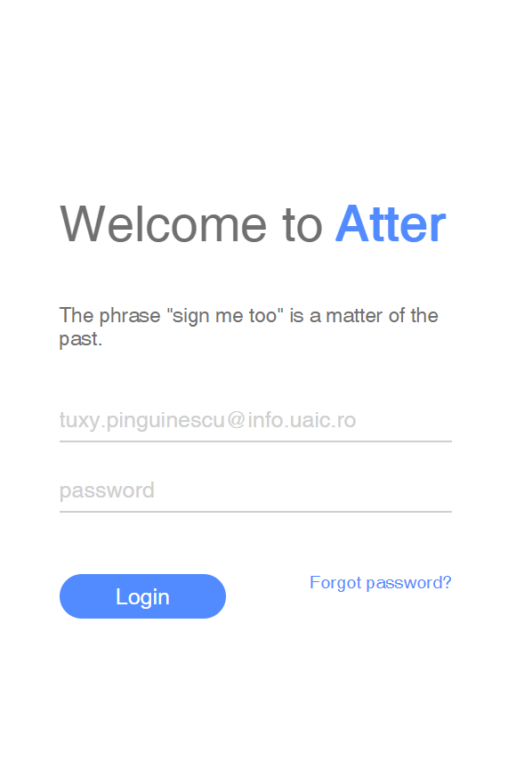
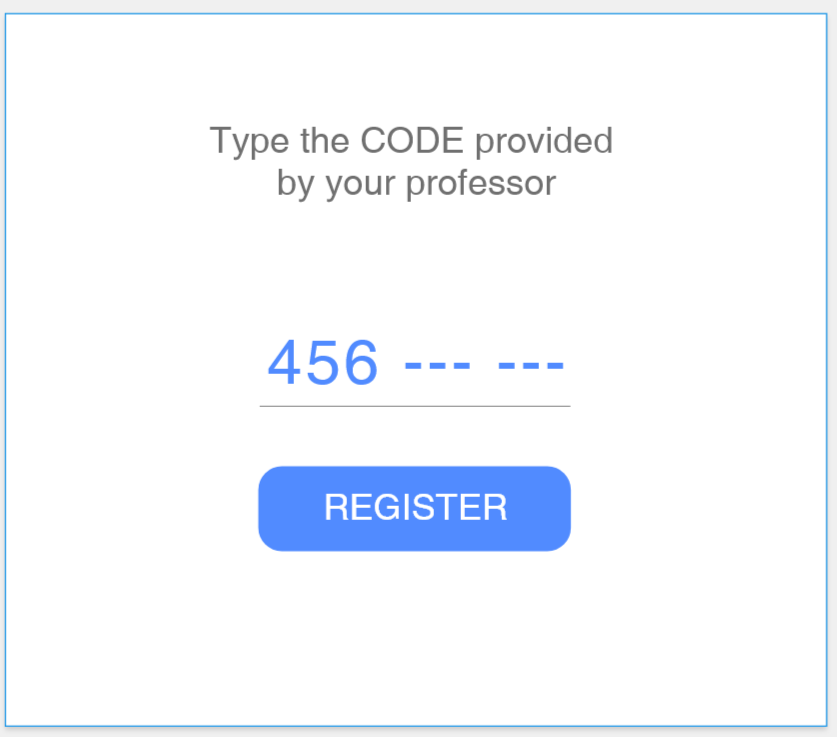
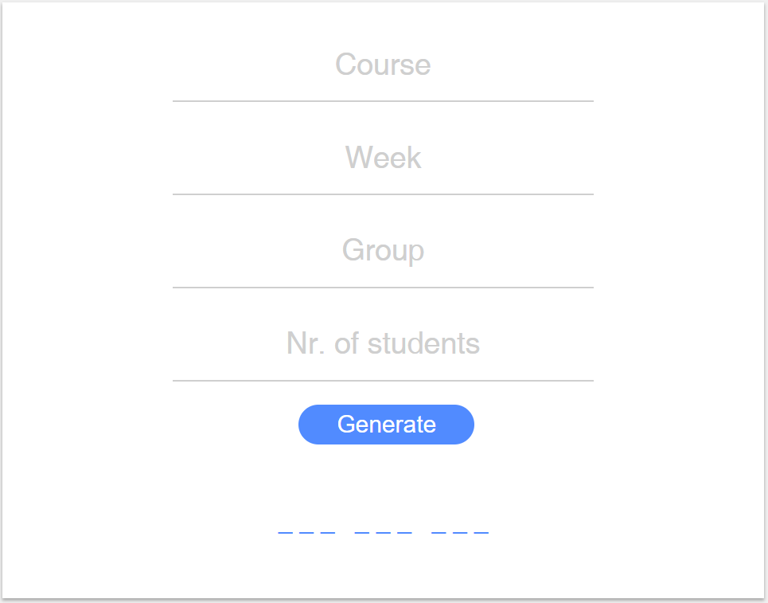

Ghidul de utilizare a aplicației Atter
1. Abstract
Ghidul de față prezintă modul în care un utilizator interacționează cu aplicația Atter,
oferind detalii în legătură designul general al aplicației, care expune utilizatorului un set de acțiuni pe care le poate efectua.
2. Introducere
Atter este o aplicație web destinată studenților și profesorilor Facultății de Informatică Iași, ce implementează un sistem de gestionare a prezențelor la curs/seminar.
Utilizatorii se împart în două categorii, profesorii, care înregistrează un seminar/curs, adaugă punctaje/notițe și studentii, care își înregistrează prezența la seminar/curs și visualizează date despre situația lor la acea materie.
Modul de utilizare a aplicației este unul intuitiv, "user friendly", fiind conceput după un design minimalist.
3. Privire de ansamblu
La accesarea aplicației, utilizatorului îi este afișată pagina principală autentificare , aceasta făcându-se excusiv cu adresa de email-ul și parola oferite de facultate.
Odată autentificat,
utilizatorul are la dispoziție serviciile propriu-zise ale aplicației: înregistrarea unui seminar, înregistrarea prezenței, adaugarea și vizualizarea datelor despre seminare, vizualizarea de rapoarte întocmite pe baza datelor înregistrate.
4. Ghidul paginii principale
Când utilizatorul accesează pagina principală, acesta este întâmpinat de un formular care necesită a fi completat a putea avea acces la serviciile oferite de aplicație:

5. Ghidul paginii dashboard
Fiind o aplicație ce respectă conceptul de Single Page Application, Atter este compusă dintr-o singura pagină ce afișează în partea stângă drept conținut static,
meniul cu acțiunile principale pe care utilizatorul le poate face în aplicație, iar în partea dreaptă vor fi încărcate dinamic componente,
Meniul din partea dreaptă pune la dispoziție acțiuni personalizate în funcție de tipul contului de utilizator. Așadar, un profesor poate să înregistreze un seminar/curs, poate vizualiza rapoarte întocmite cu datele preluate de la grupele sale, poate adăuga punctaje studenților sau link-uri utile.
Un student are la dispoziție opțiunea de înregistrare a prezenței la un seminar, poate vizualiza rapoarte și date despre materiile de interes, cât si evoluția în ansamblu.
6. Ghidul componentei de înregistrare
Înregistrarea se realizează în două sensuri, atât înregistrarea seminarului de către profesor, cât și înregistrarea studentului la un anumit seminar. Mecanismul este acesta:
Un profesor completează un mic formular unde specifică titlul cursului, săptămâna, grupa și numărul de studenți, după care va fi generat automat un cod de înregistrare, valabil până la terminarea seminarului.
Studenții au obligația de a întroduce codul oferit de profesor până la încheierea seminarului, pentru a fis înregistrați, totdată, doar un număr limitat de studenți se pot înregistra, numărul specificat de profesor la completarea formularului.


7. Ghidul paginii de gestionare a cursurilor
Pentru gestionarea cursurilor utilizatorul ce are cont de profesor vizualizeaza pentru fiecare materie grupele pe care le are asignate, poate alege o grupa specifica pentru a efectua modificari in ceea ce priveste punctajele si notitele de seminar.
Un student are pentru fiecare materie drept de vizualizare asupra prezentei, punctajelor dar si a notitelor.